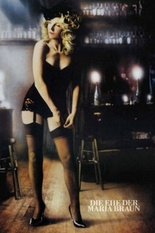

gesehen am 14.10.2016
gesehen am 14.10.2016Alternativ: Marriage of Maria Braun, The (Originaltitel) gesehen am 14.10.2016
 
 IMDB-Wertung: 7.9 / 10
IMDB-Wertung: 7.9 / 10  Metascore:
Metascore: 
Deutschland im Jahr 1943: Während eines Luftangriffs in einer deutschen Stadt heiratet Maria den Soldaten Hermann Braun; das Standesamt wird durch die Explosion einer Fliegerbombe zerstört. Hermann muss sofort wieder an die Front, und Maria ist auf sich allein gestellt. Nach Kriegsende nimmt sie ihr Schicksal in die eigene Hand. Die Nachricht, Hermann sei gefallen, veranlasst die mit ihrer Mutter und ihrem Großvater lebende Maria, als Bardame für den Lebensunterhalt der Familie zu sorgen. Sie beginnt eine Beziehung mit Bill, einem afroamerikanischen GI, der sich um sie kümmert und sie mit begehrten Gütern wie Nylonstrümpfen und Zigaretten versorgt. Marias Mann ist jedoch noch am Leben und kehrt aus der Kriegsgefangenschaft zurück.
Jahr: 1979
Dauer: 120 Minuten
FSK: 12
Land: West-Deutschland Studio: United ArtistsTonspuren:
Untertitel:
Auflösung: 1080p (1808x1080) Größe: 10342 MB
Genre: Drama
Regisseur: Rainer Werner Fassbinder
Drehbuch: Mark Anders
Soundtrack:
Darsteller:
 Hanna Schygulla als Maria Braun
Hanna Schygulla als Maria Braun Klaus Löwitsch als Hermann Braun
Klaus Löwitsch als Hermann Braun Gottfried John als Willi Klenze
Gottfried John als Willi Klenze Claus Holm als Doctor
Claus Holm als Doctor Isolde Barth als Vevi
Isolde Barth als Vevi Günther Kaufmann als American on train
Günther Kaufmann als American on train Rainer Werner Fassbinder als Peddler
Rainer Werner Fassbinder als Peddler Peter Berling als Bronski
Peter Berling als BronskiDatei: X:\1979\Ehe der Maria Braun, Die (1979, FSK12, 1808x1080).mkv seit 05.10.2016
Festplatte: HD 1971-1979
 Es gibt insgesamt 29 Filme in der Gruppe '1979'
Es gibt insgesamt 29 Filme in der Gruppe '1979'